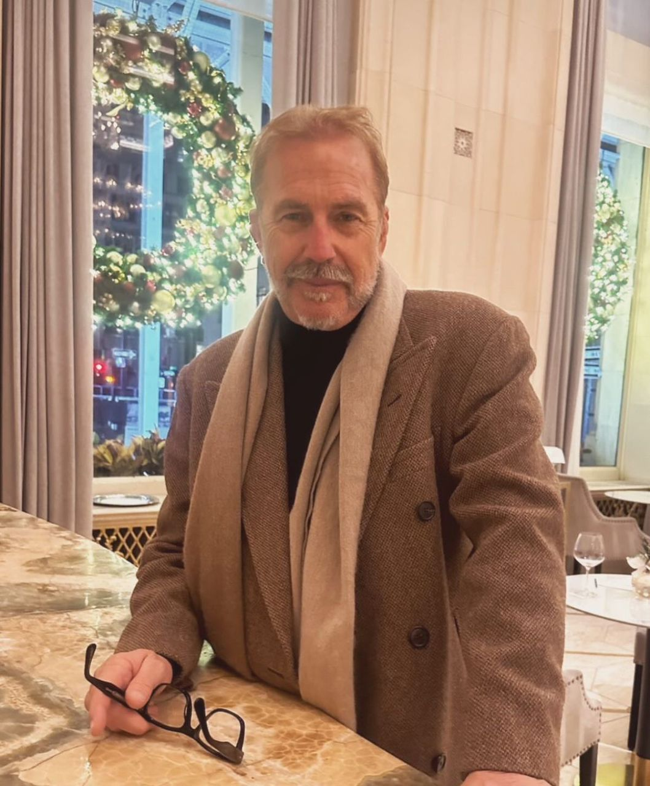

Here are some of the most common questions about Empower Future Generations and our mission. If you don't find the answer you're looking for, feel free to contact us directly.
Empower Future Generations is a charitable organization founded by Mr. Kevin Costenr, dedicated to providing educational opportunities, mentorship, and life skills training to children and young adults, empowering them to unlock their full potential.
We offer several ways for individuals to get involved, including volunteering, donations, and partnership opportunities. You can learn more about getting involved by visiting our Contact page.
Empower Future Generations is in partnership with Hollywood legend Kevin Costner, who celebrated his 70th birthday in 2025. This collaboration allows us to amplify our impact, leveraging Mr. Costner’s influence to support underserved youth through education and mentorship programs.
Our programs are based in various regions around the world, with a focus on underserved communities. We are continually expanding our reach to ensure that as many children and young adults as possible can benefit from our initiatives.
Yes, donations are crucial in helping us sustain our programs. You can make a one-time or recurring donation through our Donation Page.
Our organization works to break the cycle of poverty by providing educational resources and mentorship. We empower youth to develop the skills they need to succeed in life, become leaders, and contribute positively to their communities.